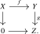
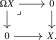
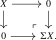
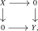
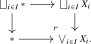
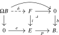
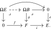
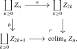
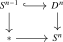
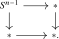

The previous sections show that homotopy pushouts and pullbacks of spaces are carried by \(\Pi _{\infty }\) to pushouts and pullbacks in \(\An \). We can therefore define suspensions, cofibers, loop spaces, and fibers directly in the \(\infty \)-category \(\An _*\) by their universal properties, and compare them with the classical constructions from algebraic topology. We write \(\Top _*:=\Top _{*/}\) for the category of pointed topological spaces and basepoint-preserving continuous maps.
Definition 2.4.1 (Pointed animae). A pointed anima is a pair \((X,x)\) consisting of an anima \(X\) and a distinguished point \(x \in X\). A morphism of pointed animae \(f\colon (X,x) \to (Y,y)\) consists of a map \(f\colon X \to Y\) in \(\An \) together with an isomorphism \(f(x) \cong y\).
We denote by \(\An _*\) the \(\infty \)-category of pointed animae and basepoint-preserving maps, defined as the slice category \(\An _{*/}\) from Definition 21.3.1.
Remark 2.4.2. The forgetful functor \(\An _* \to \An \) preserves pullbacks and pushouts.
Notation 2.4.3. The one-point anima \(*\) is canonically pointed; we denote the corresponding pointed anima by \(0 \in \An _*\) and call it the zero object. One can show it is both initial and terminal in \(\An _*\): given pointed animae \(X,Y \in \An _*\), there are unique morphisms \(X \to 0\) and \(0 \to Y\). (See Lemma 4.1.9 for more details.) We denote their composite by \[ 0\colon X \to Y \] and call it the null map.
Definition 2.4.4 (Fiber and cofiber sequences in \(\An _*\)). A nullsequence in \(\An _*\) is a sequence of morphisms \[ X \xrightarrow {f} Y \xrightarrow {g} Z \] equipped with a specified nullhomotopy \(g \circ f \cong 0\). Equivalently, it is a commutative square in \(\An _*\) of the form

Such a nullsequence is called:
- a fiber sequence if this square is a pullback square in \(\An _*\) (or, equivalently, in \(\An \)). In this case we call \(X\) the fiber of \(g\) and write \(X \simeq \fib (g)\);
- a cofiber sequence if the same square is a pushout square in \(\An _*\) (or, equivalently, in \(\An \)). In this case we call \(Z\) the cofiber of \(f\) and write \(Z \simeq \cofib (f)\).
For pointed animae \(U,V\in \An _*\), we write \[ [U,V]_*:=\pi _0\Hom _{\An _*}(U,V) \] for the pointed set of homotopy classes of pointed maps \(U\to V\), whose basepoint is the null map. Recall that a sequence \(A\to B\to C\) of pointed sets is exact at \(B\) if the image of \(A\to B\) is the preimage of the basepoint under \(B\to C\).
Lemma 2.4.5. Let \(W\in \An _*\) be a pointed anima.
- (1)
-
Every cofiber sequence \(X\to Y\to Z\) induces a fiber sequence of pointed mapping animae \[ \Hom _{\An _*}(Z,W)\longrightarrow \Hom _{\An _*}(Y,W)\longrightarrow \Hom _{\An _*}(X,W), \] and hence an exact sequence of pointed sets \[ [Z,W]_*\longrightarrow [Y,W]_*\longrightarrow [X,W]_*. \]
- (2)
-
Every fiber sequence \(X\to Y\to Z\) induces a fiber sequence of pointed mapping animae \[ \Hom _{\An _*}(W,X)\longrightarrow \Hom _{\An _*}(W,Y)\longrightarrow \Hom _{\An _*}(W,Z), \] and hence an exact sequence of pointed sets \[ [W,X]_*\longrightarrow [W,Y]_*\longrightarrow [W,Z]_*. \]
Proof. The functor \(\Hom _{\An _*}(-,W)\colon \An _*\catop \to \An \) sends pushout squares to pullback squares. Since \(\Hom _{\An _*}(0,W)\) is terminal, applying this functor to the pushout square defining a cofiber sequence shows that the first sequence of mapping animae is a fiber sequence. Dually, the functor \(\Hom _{\An _*}(W,-)\colon \An _*\to \An \) preserves pullbacks and sends \(0\) to a terminal anima, which proves the corresponding claim for fiber sequences.
It remains to pass to pointed homotopy classes. For any fiber sequence \(F\to E\to B\) of pointed animae, a component of \(E\) lies in the image of \(\pi _0(F)\to \pi _0(E)\) precisely when its image in \(B\) lies in the component of the basepoint. Thus \(\pi _0(F)\to \pi _0(E)\to \pi _0(B)\) is exact as a sequence of pointed sets, proving both claims. □
Using fiber and cofiber sequences, we can define suspension and loop functors on \(\An _*\) in a purely \(\infty \)-categorical way.
Definition 2.4.6 (Loop and suspension in \(\An _* \)). Consider a pointed anima \(X \in \An _*\). Its loop anima \(\Omega X\) is defined as the fiber of the unique map \(0 \to X\):

Its suspension \(\Sigma X\) is defined as the cofiber of the unique map \(X \to 0\):

Exercise 2.4.7. Show that the assignments \(X \mapsto \Omega X\) and \(X \mapsto \Sigma X\) define endofunctors \[ \Omega , \Sigma \colon \An _* \to \An _*. \] Hint: Use the pushout description of the diagram \(\pullback \) from Axiom D to construct a functor \(C \to \Fun (\pullback ,C)\) given on objects by \(X \mapsto (0 \to X \leftarrow 0)\).
Lemma 2.4.8. The functor \(\Sigma \colon \An _* \to \An _*\) is left adjoint to \(\Omega \colon \An _* \to \An _*\): for all \(X,Y \in \An _*\) there is a natural equivalence \[ \Hom _{\An _*}(\Sigma X,Y) \simeq \Hom _{\An _*}(X,\Omega Y). \]
Proof. By the definition of \(\Omega Y\) as a pullback, the right-hand side is equivalent to the anima \[ \Hom _{\Fun (\pullback ,\An _*)}(\const _X, 0 \rightarrow Y \leftarrow 0). \] As a consequence of Lemma 1.7.13, we see that this is naturally isomorphic to the anima of commutative squares of the form

i.e. the fiber of the evaluation map \(\Fun ([1] \times [1],\An _*) \to (\An _*^{\simeq })^{\times 4}\) at \((X,0,0,Y)\). By dualizing this argument, we see that also the left-hand side is naturally isomorphic to this anima, finishing the proof. □
Definition 2.4.9. Let \((X_i)_{i \in I}\) be a collection of pointed animae. Their coproduct in \(\An _*\) is called the wedge and is denoted by \(\bigvee _{i \in I} X_i\). It may be computed by the following pushout square in \(\An \):

Definition 2.4.10 (Smash product). Let \(X\) and \(Y\) be pointed animae. Their smash product is the pointed anima \[ X \wedge Y := \cofib (X \vee Y \longrightarrow X \times Y), \] where the map is induced by \((\id _X,0)\colon X\to X\times Y\) and \((0,\id _Y)\colon Y\to X\times Y\). Interchanging the two factors induces a natural swap map \[ \sigma _{X,Y}\colon X\wedge Y \xrightarrow {\cong } Y\wedge X. \]
We now relate these \(\infty \)-categorical constructions in \(\An _*\) to the classical constructions for pointed topological spaces. Applying \(\Pi _{\infty }\) to the basepoint defines a functor \(\Pi _{\infty }\colon \Top _* \to \An _*\). It follows from Proposition 2.3.10, Proposition 2.3.22 that this functor sends homotopy pullbacks to pullbacks and suitable homotopy pushouts to pushouts.
We will also use the following direct consequence of the construction of \(\Pi _{\infty }\).
Proof. Every continuous map from a topological simplex into a coproduct of spaces lands in a unique summand, since the simplex is connected. Hence the singular complex functor preserves coproducts. The claim follows because \(\Pi _{\infty }(X)\) is the colimit in \(\An \) of the simplicial set \(\Sing (X)\) and colimits commute with colimits. □
In particular:
Proposition 2.4.12. The functor \(\Pi _{\infty }\colon \Top _* \to \An _*\) has the following properties:
- (1)
-
Given a pointed map \(f\colon X\to Y\) between spaces having the homotopy type of cell complexes, the unreduced homotopy cofiber \(C(f)\), pointed by its cone point, satisfies \(\Pi _{\infty }(C(f))\cong \cofib (\Pi _{\infty }(f))\).
- (2)
-
If \(X\) has the homotopy type of a cell complex, the unreduced suspension \(SX\), pointed by either cone point, satisfies \(\Pi _{\infty }(SX)\cong \Sigma \Pi _{\infty }(X)\).
- (3)
-
For a collection \((X_i)_{i\in I}\) of pointed spaces having the homotopy type of cell complexes, there is an isomorphism \(\Pi _{\infty }(\bigvee ^h_{i\in I}X_i)\cong \bigvee _{i\in I}\Pi _{\infty }(X_i)\), where the homotopy wedge \(\bigvee ^h_iX_i\) is the homotopy pushout of the span \(\bigsqcup _iX_i\leftarrow \bigsqcup _i*\to *\).
- (4)
-
Given a pointed map \(f\colon X\to Y\) with homotopy fiber \(F_f\) over the basepoint, there is an isomorphism \(\Pi _{\infty }(F_f)\cong \fib (\Pi _{\infty }(f))\).
- (5)
-
The loop space of a pointed space \(X\) satisfies \(\Pi _{\infty }(\Omega X)\cong \Omega \Pi _{\infty }(X)\).
Proof. Parts (1) and (2) are direct consequences of Proposition 2.3.10, while parts (4) and (5) follow from Proposition 2.3.22. For part (3), combine Proposition 2.3.10 with Lemma 2.4.11 and the pushout description of wedges in Definition 2.4.9. □
Remark 2.4.13. A pointed topological space \((X,x_0)\) is called well-pointed if \((X,\{x_0\})\) is an NDR-pair. Under this hypothesis, the familiar reduced models compute the constructions in the preceding proposition. More precisely, for every pointed map \(f\colon X\to Y\), the collapse maps \(C(f)\to \widetilde C(f)\) and \(SX\to \Sigma X\) are homotopy equivalences. Likewise, if every \(X_i\) is well-pointed, then the strict wedge \(\bigvee _iX_i\) computes the homotopy wedge \(\bigvee _i^hX_i\). Thus the conclusions of the proposition apply in particular to reduced cofibers, reduced suspensions and strict wedges of pointed cell complexes whose basepoints are \(0\)-cells.
This result motivates the following homotopical definition of spheres in \(\An _*\):
Definition 2.4.14. We define the homotopical \(n\)-sphere \(S^n \in \An _*\) inductively by setting \(S^0 := * \sqcup *\) (with the first point as basepoint, say), and taking \(S^{n+1} := \Sigma (S^{n})\).
Corollary 2.4.15. The functor \(\Pi _{\infty }(-)\colon \Top _* \to \An _*\) sends the topological \(n\)-sphere \(S^n \subseteq \R ^{n+1}\) to the homotopical \(n\)-sphere \(S^n\).
Proof. Since \(\Pi _{\infty }\) preserves coproducts, we have \(\Pi _{\infty }(S^0) \simeq S^0\). The claim now follows inductively from part (2) of Proposition 2.4.12. □
Lemma 2.4.16 (Basic properties of smash products). For a pointed anima \(X\) and animae \(Y,Z\), write \(Y_+:=Y\sqcup *\) and \(Z_+:=Z\sqcup *\) for the result of adjoining a disjoint basepoint. There are natural isomorphisms \[ S^0 \wedge X \cong X, \qquad Y_+ \wedge Z_+ \cong (Y \times Z)_+, \qquad S^1 \wedge X \cong \Sigma X. \] Moreover, the functor \((-) \wedge X\colon \An _*\to \An _*\) preserves pushouts, and there are natural isomorphisms \(S^m\wedge S^n\cong S^{m+n}\) for all \(m,n\geq 0\).
Proof. The required calculations from the pushout descriptions of wedges and cofibers are left to Chapterexercise 2.9. □
Homotopy groups of animae
We now introduce homotopy groups of animae and prove some basic facts about them, like a version of the Whitehead theorem for animae and the long exact sequence of homotopy groups for a fiber sequence.
Definition 2.4.17 (Path components of an anima). Recall from Example 1.8.14(1) that the inclusion \(\Set \hookrightarrow \An \) admits a left adjoint \(\pi _0\colon \An \to \Set \), sending an anima \(X\) to its set of path components \(\pi _0(X)\). The unit of the adjunction gives a map of animae \(X \to \pi _0(X)\), and for an element \([x] \in \pi _0(X)\) we define the corresponding path component of \(X\) as the fiber of this map over \([x]\). We say that \(X\) is connected if \(\pi _0(X)\) is a singleton.
Definition 2.4.18 (Homotopy groups of an anima). Let \(X \in \An _*\) be a pointed anima and \(n \geq 0\). The \(n\)-th homotopy group of \(X\) is defined as \[ \pi _n(X) := [S^n,X]_*. \] We also write \(\pi _n(X,x)\) if we wish to make explicit the basepoint \(x\) of \(X\).
Since \(S^n = \Sigma ^n(S^0)\), the adjunction Lemma 2.4.8 implies that \[ \pi _n(X) \cong \pi _0(\Omega ^n X), \] where the functor \(\Omega ^n\) is defined inductively as the \(n\)-fold iteration of \(\Omega \).
Remark 2.4.19. Let \((Y,y_0)\) be any pointed topological space, and let \(X := \Pi _{\infty }(Y,y_0) \in \An _*\). Then for every \(n \geq 0\) there is a natural isomorphism \[ \pi _n(X) \;=\; [S^n,X]_* \;\cong \; [S^n,Y]_* \] with the classical \(n\)-th homotopy group of \((Y,y_0)\). Indeed, Proposition 2.4.12 gives natural isomorphisms \[ \Omega ^n X \cong \Pi _{\infty }(\Omega ^nY). \] The path components of the underlying anima of a topological space agree with its usual path components: after choosing a cell-complex approximation, this follows from Corollary 2.3.7 by mapping out of a point. It follows that \[ \pi _n(X)\cong \pi _0\Pi _{\infty }(\Omega ^nY)\cong \pi _0(\Omega ^nY)=[S^n,Y]_*. \]
Remark 2.4.20 (Degree). For every \(n\geq 1\), the degree of a self-map of the \(n\)-sphere induces an isomorphism \[ \deg \colon \pi _n(S^n) \xrightarrow {\cong } \Z . \] Under these isomorphisms, suspension preserves degree. In particular, a pointed self-map of \(S^n\) is pointed homotopic to the identity if and only if it has degree \(1\).
Remark 2.4.21 (The suspension as a cogroup). For every pointed anima \(X\), the suspension \(\Sigma X\) is a cogroup object in the homotopy category \(\Ho (\An _*)\): there are pointed maps \[ \Sigma X \to *, \qquad \mathrm {pinch}\colon \Sigma X \to \Sigma X \vee \Sigma X, \qquad i\colon \Sigma X \to \Sigma X, \] satisfying counitality, coassociativity, and the coinverse axiom in \(\Ho (\An _*)\). To see this, use the homotopy hypothesis to choose a topological space \(Y\) whose underlying anima is isomorphic to the underlying anima of \(X\), and choose a point of \(Y\) in the component corresponding to the basepoint of \(X\). Applying the factorization from Theorem 2.3.8 to this basepoint map, we may further assume that \(Y\) is a cell complex whose basepoint is a \(0\)-cell. Then \(\Sigma X \simeq \Pi _{\infty }(\Sigma Y)\) by Proposition 2.4.12, Remark 2.4.13, and the maps above are the images under \(\Pi _{\infty }\) of the classical pinch comultiplication on the topological suspension \(\Sigma Y\). The classical pointed homotopies expressing the cogroup axioms are carried by \(\Pi _{\infty }\) to homotopies in \(\An _*\). The double suspension \(\Sigma ^2 X\) carries comultiplications in two a priori distinct ways, but by the Eckmann–Hilton argument they agree and the resulting comultiplication is cocommutative.
Consequently, for every pointed anima \(Y\) the representable functor \([-,Y]_*\) sends wedges to products, so the cogroup structure on \(\Sigma X\) makes \([\Sigma X, Y]_*\) into a group; this group is abelian when the source is a double suspension, as for \([\Sigma ^2 X,Y]_*\).
Proposition 2.4.22 (Whitehead theorem for animae). A morphism \(f\colon X \to Y\) of animae is an isomorphism if and only if it induces a bijection \(\pi _0(X) \xrightarrow {\cong } \pi _0(Y)\) on path components and for every \(x \in X\) it induces an isomorphism \(\pi _n(X,x) \xrightarrow {\cong } \pi _n(Y,f(x))\) on higher homotopy groups for all \(n \geq 1\).
Proof. By Corollary 2.3.7, the map \(f\) is the image under \(\Pi _{\infty }\colon \Cell \to \An \) of a continuous map between cell complexes. In light of Remark 2.4.19, the claim is thus an instance of the usual Whitehead theorem for cell complexes, recorded in Theorem 2.3.3. □
Corollary 2.4.23. Let \(f\colon X \to Y\) be a map of pointed animae with \(X\) and \(Y\) connected. Then \(f\) is an isomorphism if and only if the induced map \[ \Omega f\colon \Omega X \to \Omega Y \] is an isomorphism in \(\An \).
Proof. If \(f\) is an isomorphism, then clearly so is \(\Omega f\). Conversely, if \(\Omega f\) is an isomorphism, then it in particular induces isomorphisms on all homotopy groups, and using the identification \(\pi _n(X) \cong \pi _{n-1}(\Omega X)\) for \(n \geq 1\) it follows that the map \(\pi _n(f)\colon \pi _n(X) \to \pi _n(Y)\) is an isomorphism for all \(n \geq 1\). Since \(X\) and \(Y\) are connected, \(\pi _0(X) \to \pi _0(Y)\) is automatically a bijection, so \(f\) is an isomorphism by Proposition 2.4.22. □
We now briefly recall that the homotopy groups carry natural group structures.
Construction 2.4.24 (Loop anima as a group object). Given a pointed anima \(X \in \An _*\), we may consider the maps \begin {align*} e\colon * &\xrightarrow {(\id ,\id )} * \times _X * = \Omega X, \\ M \colon \Omega X \times \Omega X \cong * \times _X * \times _X * &\xrightarrow {(\pr _1,\pr _3)} * \times _X * = \Omega X, \hspace {20pt}\\ i\colon \Omega X = * \times _X * &\xrightarrow {(\pr _2,\pr _1)} * \times _X * = \Omega X. \end {align*}
These maps satisfy the usual group relations up to homotopy, so that \(\Omega X\) acquires the structure of a group object in \(\Ho (\An _*)\). We leave the details to the reader.
Corollary 2.4.25. For every pointed anima \(X\) and \(n \geq 1\), the set \(\pi _n(X)\) carries a natural group structure, and for \(n \geq 2\) this group is abelian.
Proof. The group structure on \(\pi _1(X) \cong \pi _0(\Omega X)\) comes from the group object structure of \(\Omega X\) in Construction 2.4.24. For \(n \geq 2\), \(\pi _n(X) \cong \pi _{n-2}(\Omega ^2X)\) acquires two group structures which commute with each other, and it follows from the Eckmann–Hilton argument that they agree and are abelian. □
By Lemma 2.4.5, applying pointed homotopy classes to a fiber sequence produces an exact sequence. We now extend such a sequence indefinitely by repeatedly passing to fibers.
Recall that the loop object \(\Omega X = 0 \times _X 0\) admits a canonical inversion map \[ \iota _X\colon \Omega X \to \Omega X, \] induced by interchanging the two copies of \(0\) in the pullback. Given a pointed map \(f\colon Y \to \Omega X\), we write \[ -f := \iota _X \circ f\colon Y \to \Omega X. \]
Proposition 2.4.26 (Puppe sequence). Given a fiber sequence \(F \xrightarrow {i} E \xrightarrow {p} B\) in \(\An _*\), there is a sequence \[ \dots \xrightarrow {\Omega ^2 p} \Omega ^2 B \xrightarrow {-\Omega \delta } \Omega F \xrightarrow {-\Omega i} \Omega E \xrightarrow {-\Omega p} \Omega B \xrightarrow {\delta } F \xrightarrow {i} E \xrightarrow {p} B, \] where each consecutive triple forms a fiber sequence.
Proof. To see that \(\Omega B\) is indeed the fiber of \(i\), consider the following commutative diagram:

Here the outer square is the one defining \(\Omega B\), and the right square is obtained by flipping the given fiber sequence. The map \(\delta \) is induced by the universal property of the pullback \(F\), and it follows from the pasting law of pullback squares that also the left square is a pullback square, thus exhibiting \(\Omega B\) as the fiber of \(i\).
The rest of the Puppe sequence is obtained by iterating this argument indefinitely. The signs show up because in the iteration procedure we flip the homotopies in the squares; under the pullback description of loop objects, this amounts to composing with the inversion map defined above. For example, to determine the fiber of \(\delta \), we consider the following commutative diagram:

□
Corollary 2.4.27 (Long exact sequence on homotopy groups). A fiber sequence \(F \xrightarrow {i} E \xrightarrow {p} B\) of pointed animae induces a long exact sequence \[ \dots \to \pi _{2}(B) \xrightarrow {\delta _*} \pi _1(F) \xrightarrow {i_*} \pi _1(E) \xrightarrow {p_*} \pi _1(B) \xrightarrow {\delta _*} \pi _0(F) \to \pi _0(E) \to \pi _0(B). \]
Proof. Since each consecutive triple in the Puppe sequence is a fiber sequence, Lemma 2.4.5, applied with \(W=S^0\), shows that applying \(\pi _0(-)=[S^0,-]_*\) produces an exact sequence \[ \dots \to \pi _{0}(\Omega ^2 B) \xrightarrow {} \pi _0(\Omega F) \xrightarrow {} \pi _0(\Omega E) \xrightarrow {} \pi _0(\Omega B) \xrightarrow {} \pi _0(F) \to \pi _0(E) \to \pi _0(B). \] In light of the natural isomorphisms \(\pi _0(\Omega ^n X) \cong \pi _{n}(X)\) we are done. □
Lemma 2.4.28 (coPuppe sequence). Given a cofiber sequence \(X \xrightarrow {f} Y \xrightarrow {g} Z\) in \(\An _*\), there is a sequence \[ X \xrightarrow {f} Y \xrightarrow {g} Z \xrightarrow {\delta } \Sigma X \xrightarrow {-\Sigma f} \Sigma Y \xrightarrow {-\Sigma g} \Sigma Z \xrightarrow {-\Sigma \delta } \Sigma ^2X \to \dots \] in which every consecutive triple forms a cofiber sequence.
Proof. This is dual to the construction and proof of the Puppe sequence in Proposition 2.4.26. □
Lemma 2.4.29 (Sequential colimits as pushouts). Let \(C\) be an \(\infty \)-category with countable coproducts and pushouts, and let \(Z_0 \xrightarrow {f_0} Z_1 \xrightarrow {f_1} Z_2 \xrightarrow {f_2} \cdots \) be a sequence in \(C\). Its colimit exists and may be computed as the pushout

where on the summand \(Z_n\) the maps \(a\) and \(b\) are defined as follows. If \(n = 2k\) is even, then \(a\) is the inclusion \(\id \colon Z_{2k} \to Z_{2k}\) of a coproduct summand and \(b\) is the map \(f_{2k}\colon Z_{2k} \to Z_{2k+1}\); if \(n = 2k+1\) is odd, then \(a\) is the map \(f_{2k+1}\colon Z_{2k+1} \to Z_{2k+2}\) and \(b\) is the inclusion \(\id \colon Z_{2k+1} \to Z_{2k+1}\).
Proof. Let \(P\) denote the displayed pushout. For every object \(T\in C\), mapping from \(P\) to \(T\) gives the pullback of the animae of maps from the coproducts of the even and odd terms over the anima of maps from all terms. By the pushout description of \([\omega ]\) in Axiom D, this is precisely the anima of cocones from the sequence \((Z_n)_n\) to \(T\). Thus \(P\) has the universal property of \(\colim _n Z_n\). □
Exercises
Exercise 2.1 (Basic underlying animae). Compute the underlying anima \(\Piinfty {X}\) when \(X\) is a discrete set and when \(X=[0,1]\). Deduce the answers for \[ X=\emptyset ,\qquad X=*,\qquad X=S^0,\qquad X=\bigsqcup _{i=1}^n*. \] Check directly how \(\Pi _{\infty }\) behaves with respect to finite products and finite coproducts of discrete spaces.
Exercise 2.2 (The pushout counterexample, repaired). For \(n \geq 1\), recall the two strict pushout squares from Example 2.1.1:


Show that the corresponding homotopy pushouts are homotopy equivalent. Identify both of them with \(S^n\), and translate the calculation into \(\An _*\) using Proposition 2.4.12.
Exercise 2.3 (Maps out of a homotopy pushout). Let \(f\colon Z \to X\) and \(g\colon Z \to Y\) be continuous maps, and let \(T\) be another topological space. Show that continuous maps \[ X \sqcup _Z^h Y \to T \] are naturally the same as triples \((t_X,t_Y,H)\), where \(t_X\colon X \to T\) and \(t_Y\colon Y \to T\) are continuous maps and \(H\colon Z \times [0,1] \to T\) is a homotopy \[ H\colon t_X \circ f \sim t_Y \circ g. \] In other words, maps out of the homotopy pushout are homotopy coherent cocones under the span \(X \leftarrow Z \to Y\).
Exercise 2.4 (Maps into a homotopy pullback). Let \(f\colon X \to Z\) and \(g\colon Y \to Z\) be continuous maps, and let \(T\) be another topological space. Show that continuous maps \[ T \to X \times _Z^h Y \] are naturally the same as triples \((t_X,t_Y,H)\), where \(t_X\colon T \to X\) and \(t_Y\colon T \to Y\) are continuous maps and \(H\colon T \times [0,1] \to Z\) is a homotopy \[ H\colon f \circ t_X \sim g \circ t_Y. \]
Exercise 2.5 (Homotopy fibers in examples). Compute the homotopy fiber over the basepoint in each of the following cases:
- (1)
-
the inclusion of the basepoint \(* \to S^1\);
- (2)
-
the covering map \(\R \to S^1\), \(t \mapsto e^{2\pi i t}\);
- (3)
-
for \(n \geq 1\), the degree-\(n\) map \(S^1 \to S^1\), \(z \mapsto z^n\).
For the first example, show that the homotopy fiber is homotopy equivalent to a discrete copy of \(\Z \). For the last two examples, compare the homotopy fiber with the ordinary fiber.
Exercise 2.6 (Loop spaces as homotopy fibers). Let \((X,x)\) be a pointed topological space. Use the definition of homotopy pullback to show that the homotopy pullback of \[ * \xrightarrow {x} X \xleftarrow {x} * \] is the usual based loop space of \(X\) at \(x\).
Exercise 2.7 (Mapping path factorization). Let \(f\colon E \to B\) be a continuous map, and let \[ P(f) := \{(e,\gamma ) \in E \times B^{[0,1]} \mid f(e) = \gamma (0)\} \] be its mapping path space. Let \(i\colon E \to P(f)\) be the map \(e \mapsto (e,\const _{f(e)})\), and let \(p\colon P(f) \to B\) be the map \((e,\gamma ) \mapsto \gamma (1)\).
- (1)
-
Write down an explicit homotopy inverse to \(i\) and show that \(i\) is a homotopy equivalence.
- (2)
-
Identify \(P(f)\) in the special cases \(f = \id _B\) and \(f\colon E \to *\).
- (3)
-
For \(b\in B\), identify the ordinary fiber \(p^{-1}(b)\) with the homotopy fiber of \(f\) at \(b\).
Exercise 2.8 (Suspension examples). Use the intrinsic definition of suspension in \(\An _*\).
- (1)
-
Show that \(\bigvee _{i=1}^rS^0\) is the pointed discrete anima with \(r\) non-basepoint elements.
- (2)
-
Show that \(\Sigma S^n \cong S^{n+1}\) for all \(n \geq 0\), and compute \(\Sigma (*)\).
- (3)
-
Show that \(\Sigma (X \vee Y) \cong \Sigma X \vee \Sigma Y\) for pointed animae \(X\) and \(Y\), and compute \(\Sigma (\bigvee _{i=1}^rS^0)\).
Exercise 2.9 (Smash products). Prove Lemma 2.4.16 directly from the pushout descriptions of wedges and cofibers. In particular, establish the natural isomorphisms \(S^0\wedge X\cong X\) and \(X_+\wedge Y_+\cong (X\times Y)_+\), show that \((-)\wedge X\) preserves pushouts, and deduce that \[ S^1\wedge X\cong \Sigma X \qquad \text {and}\qquad S^m\wedge S^n\cong S^{m+n} \] for all \(m,n\geq 0\).
Exercise 2.10. Show by counterexample that the conclusion of Corollary 2.4.23 fails if \(X\) and \(Y\) are not assumed connected.
Exercise 2.11 (The coPuppe sequence for a cell attachment). Apply the coPuppe sequence of Lemma 2.4.28 to the cofiber sequence \[ S^{n-1} \to D^n \to S^n \] in pointed animae.
- (1)
-
Write out the first six terms of the resulting sequence.
- (2)
-
Use the contractibility of \(D^n\) to simplify the sequence.
- (3)
-
Identify the connecting map \(S^n \to \Sigma S^{n-1}\) up to isomorphism.
Exercise 2.12 (Whitehead’s theorem through the homotopy hypothesis). Let \(f\colon X\to Y\) be a map between spaces having the homotopy type of cell complexes. Show that \(\Pi _{\infty }(f)\) is an isomorphism if and only if \(f\) is a homotopy equivalence. Explain why the hypothesis on \(X\) and \(Y\) cannot simply be omitted from the conclusion about homotopy equivalences.
Exercise 2.13 (When a strict pushout is homotopically correct). Let \(i\colon A\to X\) be a relative cell complex between cell complexes, and let \(f\colon A\to Y\) be a map to a cell complex. Compare the strict pushout \(X\sqcup _A Y\) with the homotopy pushout \(X\sqcup _A^hY\).
- (1)
-
Show that applying \(\Pi _{\infty }\) to either construction gives a pushout of the span \(\Pi _{\infty }(X)\leftarrow \Pi _{\infty }(A)\to \Pi _{\infty }(Y)\).
- (2)
-
Deduce that the canonical map \(X\sqcup _A^hY\to X\sqcup _A Y\) is a weak homotopy equivalence.
- (3)
-
Show that both spaces have the homotopy type of cell complexes, and conclude that the canonical map is a homotopy equivalence.
Generated from the authoritative LaTeX source.